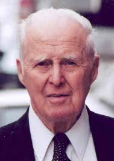

Dr. Norman Borlaug

Dr. Norman Borlaug - The Man Who Saved a Billion Lives
Dr. Norman Borlaug was an American biologist, humanitarian, and Nobel laureate who has been called the "Father of the Green Revolution." He is credited with saving over a billion lives through his work in agricultural science and the development of high-yielding wheat varieties.